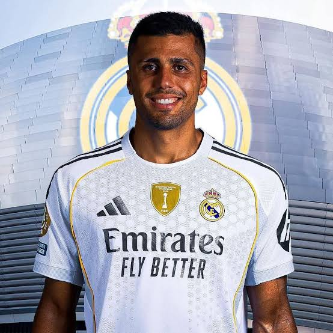

Transfer specialist Fabrizio Romano has weighed in on reports linking [Rodri] this summer, as interest in the Spaniard continues to build.
Rodri’s current deal with [Manchester City] runs until 2027, but rumours suggest Madrid are preparing a bid as the midfielder considers his future. Romano confirms that Rodri himself will make a decision in the coming months on whether to stay at City or move on to a new challenge.
Reports from Spain indicate that Real Madrid’s management has identified Rodri as a potential key midfield signing. While no official offer has been confirmed, Romano’s update strengthens the belief that the Spaniard’s situation will be one of the summer’s most intriguing transfer stories.
Rodri’s choice could determine the shape of several other clubs’ transfer strategies, as his future status influences midfield dynamics across Europe’s elite leagues. Real Madrid’s interest may also depend on Rodri’s personal preferences and his willingness to embrace a new chapter in his career.